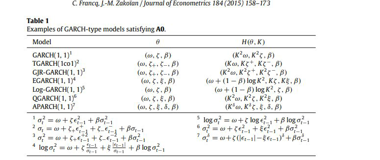
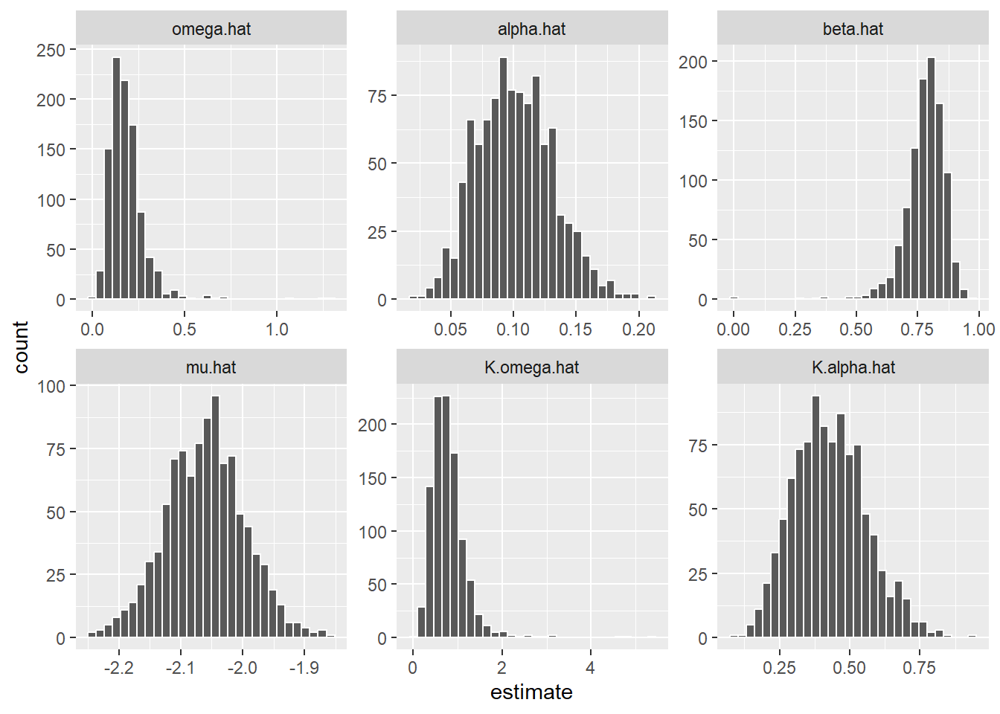
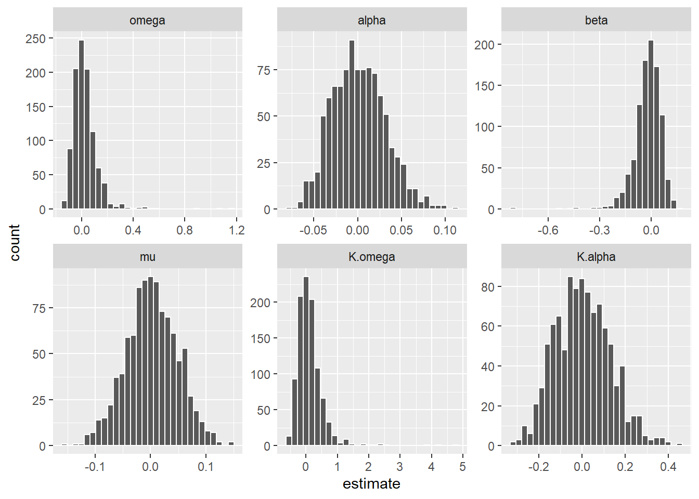

garch_specification <-
ugarchspec(
mean.model = list(armaOrder = c(0,0), include.mean = FALSE), # ARMA order #
variance.model = list(model = "sGARCH", garchOrder = c(1,1)), # GARCH order #
distribution.model = "std", # Innovation distribution #
fixed.pars = list(
mu = 0, # our mu (intercept)
ar1 = 0, # our phi_1 (AR(1) parameter of mu_t)
ma1 = 0, # our theta_1 (MA(1) parameter of mu_t)
omega = (20^2/252)*(1-0.1-0.8), # our alpha_0 (intercept)
alpha1 = 0.1, # our alpha_1 (ARCH(1) parameter of sigma_t^2)
beta1 = 0.8, # our beta_1 (GARCH(1) parameter of sigma_t^2)
shape = 500)) # d.o.f. nu for standardized t_nu innovations
garch_simulation <-
ugarchpath(
spec = garch_specification,
n.sim = 1000, # sample size (length of simulated paths),
m.sim = 1000, # number of paths
n.start = 100, # The burn-in sample
rseed = 1) # the pseudo-random seed to generate the garch process
epsilon = fitted(garch_simulation)
eta = epsilon/sigma(garch_simulation)
mu.foo = function(x){mean(ifelse(x < quantile(x, probs = 0.05), x,NA), na.rm = TRUE)}
mu.par =
apply(eta,2,mu.foo) %>%
as.data.frame() %>%
rename_with(~'mu.true') %>%
mutate(
id = row_number(),
alpha.true = 0.1,
beta.true = 0.8,
omega.true = (20^2/252)*(1-0.1-0.8),
K.alpha.true = 0.1*mu.true^2,
K.omega.true = (20^2/252)*(1-0.1-0.8)*mu.true^2)
garch.sim <- lapply(1:1000,function(j){
returns = as.numeric(epsilon[,j])
garch.fit = garchx(y = returns, order = c(1,1))
std.residuals = residuals.garchx(garch.fit)
mu.tau = mean(ifelse(std.residuals < quantile(std.residuals, probs = 0.05),
std.residuals,NA), na.rm = TRUE)
theta = coef.garchx(garch.fit)
df = tibble(
id = j,
mu.hat = mu.tau,
omega.hat = theta[1],
alpha.hat = theta[2],
beta.hat = theta[3],
K.omega.hat = theta[1]*mu.tau^2,
K.alpha.hat = theta[2]*mu.tau^2)
return(df)
})
sim = garch.sim %>% bind_rows()Expected Shortfall
GARCH-type models
Motivation
Francq and Zakoı̈an (2015) derive a limit distribution for Value-at-Risk under a general setup for GARCH-type models, but they do not establish the asymptotic distribution for the Expected Shorfall. In contrast, Gao and Song (2008) provide an asymptotic theory for both VaR and ES, although they restrict their analysis to a standard GARCH (p,q) model.
We try to complement these two papers by extending the results of Gao and Song (2008) in the framework of Francq and Zakoı̈an (2015).
To be honest, there is nothing new here. However, we have the opportunity to complement with:
- Extend the Expected Shortfall for other GARCH-type specifications

Provide confidence interval Let \(\widehat{\Xi}_{\tau}\) denote a consistent estimator of the asymptotic variance \(\Xi_{\tau}\). Then, the delta method suggest a \((1-\gamma)\%\) confidence interval for \(\text{ES}_{t}(\tau)\): \[ \hat{\text{ES}}_{t}(\tau) \pm \frac{\Phi_{1-\gamma / 2}^{-1}}{\sqrt{n}}\left\{\frac{\partial \tilde{\sigma}_t\left(\hat{\theta}_{n, \tau}\right)}{\partial \theta^{\prime}} \widehat{\Xi}_\tau \frac{\partial \tilde{\sigma}_t\left(\hat{\theta}_{n, \tau}\right)}{\partial \theta}\right\}^{1/2} \]
Explore new ideas such as VHS
Conditional Expected Shortfall
As defined by Francq and Zakoı̈an (2015), most conditional volatility models takes the form: \[\begin{equation}\label{eq-2} \left\{\begin{array}{l} \epsilon_t=\sigma_t \eta_t \\ \sigma_t=\sigma\left(\epsilon_{t-1}, \epsilon_{t-2}, \ldots ; \theta_0\right) \end{array}\right. \end{equation}\] where \(\left(\eta_t\right)\) is a sequence of i.i.d random variables, \(\eta_t\) being independent of \(\left\{\epsilon_u, u<t\right\}, \theta_0 \in \mathbb{R}^m\) is a parameter belonging to a parameter space \(\Theta\), and \(\sigma: \mathbb{R}^{\infty} \times \Theta \rightarrow(0, \infty)\).
Equation \(\eqref{eq-2}\) show that the return volatility changes conditionally on their past values. Thus, a reliable specification should take into account the time-varying effects of market risk associated with a given portfolio. Therefore, risk measures must provide an assessment of the future portfolio’s worst loss conditional to the most recent information.
Let \(r\) denote a risk measure and assume that \(r\) satisfy the positively homogeneous and law-invariant mathematical properties. Then, the risk of \(\epsilon_{t}\) conditional on \(\left\{\epsilon_u, u<t\right\}\) is given by: \[\begin{equation}\label{eq-3} r_{t-1}(\epsilon_{t}) = \sigma(\epsilon_{t-1},\dots;\theta_0)r(\eta_{t}) \end{equation}\]
To overcome the insensitivity to the magnitude of extreme realizations of the quantile-based VaR, Artzner et al. (1999), Acerbi, Nordio, and Sirtori (2001), among others, have introduced the Expected Shortfall (ES), a coherent risk measure based on tail conditional expectation.
For a continuous risk variable \(X\) such that \(\mathbb{E}(X^{-})<\infty\), the ES at level \(\tau \in (0,1)\) is given by \[ \text{r}(X) = - \mathbb{E}[X|X \leq F_{X}^{-1}(\tau)] \] The conditional ES of the process \((\epsilon_t)\) at risk level \(\tau\) is defined by \[ \text{ES}_{t}(\tau) = - \mathbb{E}_{t-1}[\epsilon_{t}|\epsilon_{t} < -\text{VaR}_{t}(\tau)] \tag{1}\] where Equation 1 measures the conditional expected loss given that the loss exceeds \(\operatorname{VaR}_{\tau}(X)\) and \(\mathbb{E}_{t-1}\) denotes the expectation conditional on \(\{\epsilon_{s}, s < t\}\).
Expected Shortfall solves the insensitivity issue, but also satisfies a wide arrange of mathematical properties, inserting itself in the class of spectral risk measures Acerbi (2002).
When (\(\epsilon_t\)) satisfies the equation \(\eqref{eq-2}\), the conditional ES is then given by \[ \text{ES}_{t}(\tau) = -\sigma(\epsilon_{t-1},\dots;\theta_0)\text{ES}_{\eta}(\tau) \tag{2}\] where \(\text{ES}_{\eta}(\tau)\) is the ES at level \(\tau\) of \(\eta_t\).
Gao and Song (2008) derived a limiting distribution for the Expected Shortfall conditional to the standard GARCH\((p,q)\) model. We extend the asymptotic properties of conditional ES to a broad class of GARCH-type models under the framework of Francq and Zakoı̈an (2015).
For that purpose, assume that the parametric form of the volatility is stable by scaling:
A0. There exists a continuous function \(H\) such that for any \(\theta \in \Theta\), for any \(K>0\), and any sequence \((x_{i})_{i}\) \[ K\sigma(x_1,x_2,\dots;\theta) = \sigma(x_1,x_2,\dots;H(\theta,K)) \]
For instance, consider the GARCH(1,1) model for the conditional volatility and that equation (2) satisfies assumption A0. Then, \(K = ES_{\eta}(\tau)\) and the ES parameter at level \(\tau\) is \(H(\theta,K) = (K^{2}\omega,K^{2}\alpha,\beta)^{\prime}\). Table bellow reports some GARCH models that satisfies the A0 property.
Let \(\mu_{\tau} = \mathbb{E}[\eta_{0}|\eta_{0} < q_{\tau}]\) denotes the ES of the distribution \(\eta_{0}\). By equation (8) and assumption A0, the conditional ES can be rewritten as \[ \text{ES}_{t}(\tau) = \sigma(\epsilon_{t-1},\dots;\theta_{0,\tau}^{*}) \tag{3}\] where \(\theta_{0,\tau}^{*} = H(\theta_{0},\mu_{\tau})\) is the ES parameter at level \(\tau\). An estimator of the ES is then given by \[ \widehat{\text{ES}}_{t}(\tau) = \widehat{\sigma}_{t}(\widehat{\theta}_{n})\widehat{\mu}_{\tau} = \widehat{\sigma}_{t}\{H(\widehat{\theta}_{n},\widehat{\mu}_{\tau})\} \tag{4}\] where \(\widehat{\mu}_{\tau}\) is the ES of the standardized errors. Also, consider \[ \widehat{\mu}_{\tau} = - \frac{\sum_{t=1}^{n}\hat{\eta}_{t}\mathbf{1}_{\{\hat{\eta}_{t} < \hat{q}_{\tau}\}}}{\sum_{t=1}^{n}\mathbf{1}_{\{\hat{\eta}_{t} < \hat{q}_{\tau}\}}} = -\frac{1}{[n\tau] + 1}\sum_{t=1}^{n}\hat{\eta}_{t}\mathbf{1}_{\{\hat{\eta}_{t} < \hat{q}_{\tau}\}} \tag{5}\] and \(H(\hat{\theta}_{n},\hat{\mu}_{\tau})\) is an estimator of the ES parameter.
We announce the following assumptions that will be used to derive the asymptotic properties of \(\widehat{\text{ES}}_{t}(\tau)\).
A1. \(\theta_0 \in \Theta\) and \(\Theta\) is compact
A2. \(\gamma\left(\mathbf{A}_0\right)<0\) and for all \(\theta \in \Theta, \sum_{j=1}^p \beta_j<1\)
A3. \(\eta_t^2\) has a non-degenerate distribution and \(E \eta_t^2=1\)
A4. If \(p>0, \mathcal{A}_{\theta_0}(z)\) and \(\mathcal{B}_{\theta_0}(z)\) have no common roots, \(\mathcal{A}_{\theta_0}(1) \neq 0\), and \(\alpha_{0 q}+\beta_{0 p} \neq 0\)
A5. \(\theta_0 \in \stackrel{\circ}{\Theta}\), where \(\stackrel{\circ}{\Theta}\) denotes the interior of \(\Theta\)
A6. \(\kappa_\eta=E \eta_t^4<\infty\)
A1-A6 are standard assumptions to ensure that QMLE of the GARCH model are consistent and normally distributed (Francq and Zakoian 2019).
Computing the ES involves two-steps, i.e, the VaR computation in a first step followed by the computation of a conditional expectation in a second step. Francq and Zakoı̈an (2015) derive the limit distribution of the conditional Value-at-Risk under assumptions A0-A6.
Theorem 1 (Francq and Zakoian (2019)) Assume \(q_\tau<0\), and suppose that \(\eta_1\) admits a density \(f\) which is continuous and strictly positive in a neighborhood of \(q_\tau\). Let A1-A6 hold. Then \[ \begin{gathered} \left(\begin{array}{c} \sqrt{n}\left(\hat{\theta}_n-\theta_0\right) \\ \sqrt{n}\left(q_\tau-q_{n, \tau}\right) \end{array}\right) \stackrel{\mathcal{L}}{\rightarrow} \mathcal{N}\left(0, \Sigma_\tau\right), \quad \Sigma_\tau=\left(\begin{array}{cc} \frac{\kappa_4-1}{4} J^{-1} & \lambda_\tau J^{-1} \Omega \\ \lambda_\tau \Omega^{\prime} J^{-1} & \zeta_\tau \end{array}\right) \end{gathered} \] where \(\Omega=E\left(D_t\right), J=E\left(D_t D_t^{\prime}\right)\) with \(D_t=D_t\left(\theta_0\right)\), and \[ \begin{aligned} & \lambda_\tau=q_\tau \frac{\kappa_4-1}{4}+\frac{\mathbb{E}\left(\eta_1^2 \mathbf{1}_{\left\{\eta_1<q_\tau\right\}} -\tau\right)}{2 f\left(q_\tau\right)}, \\ & \zeta_\tau=q_\tau^2 \frac{\kappa_4-1}{4}+\frac{q_\tau \mathbb{E}\left(\eta_1^2 \mathbf{1}_{\left\{\eta_1<q_\tau\right\}}-\tau\right)}{f\left(q_\tau\right)}+\frac{\tau(1-\tau)}{f^2\left(q_\tau\right)} \\ \end{aligned} \] with \(p_\tau=E\left(\eta_1^2 \mathbf{1}_{\left\{\eta_1<q_\tau\right\}}\right)-\tau\)
Francq and Zakoı̈an (2015) recognize that it would require more elaboration to establish its asymptotic distribution for the the conditional Expected Shortfall. Thankfully, Gao and Song (2008) show that the consistency and asymptotic normality only requires the asymptotic Properties of the standard QMLE (A1-A6) plus the following assumption.
A7. Assume that the innovation distribution \(F(x)\) has a differentiable density function \(f(x)\) and \(\sup_{x \in \mathbb{R}} x^2\left|f^{\prime}(x)\right|<\infty\). Then as \(n \rightarrow \infty\) \[ \sup_{x \in \mathbb{R}}\left|\sqrt{n}\left(\hat{F}_n(x)-F_n(x)\right)-\frac{1}{2} x f(x)\sqrt{n}\left(\hat{\theta}_n-\theta\right)^{\prime} \Omega\right|=o_p(1), \] where \(\Omega = E\left(\sigma_{t}^{-1}(\theta)\partial\sigma_{t}(\theta)/\partial\theta\right)\), \(\hat{F}_n(x) = n^{-1} \sum_{t=1}^n I\left(\hat{\eta}_t \leq x\right)\) and \(F_n(x) = n^{-1} \sum_{t=1}^n I\left(\eta_{t} \leq x\right)\) are empirical distributions of estimated and true innovations, respectively.
Theorem 2 (Gao and Song (2008)) Let A1-A7 hold. Then, \[ \begin{gathered} \left(\begin{array}{c} \sqrt{n}\left(\hat{\theta}_n-\theta_0\right) \\ \sqrt{n}\left(\mu_\tau- \mu_{n, \tau}\right) \end{array}\right) \stackrel{\mathcal{L}}{\rightarrow} \mathcal{N}\left(0, \Xi_\tau\right), \quad \Xi_\tau=\left(\begin{array}{cc} \frac{\kappa_4-1}{4} J^{-1} & \vartheta_\tau J^{-1} \Omega \\ \vartheta_\tau \Omega^{\prime} J^{-1} & \varphi_\tau \end{array}\right) \end{gathered} \] where \[ \begin{aligned} & \vartheta_\tau=\mu_\tau \frac{\kappa_4-1}{4} + \frac{\mathbb{E}\left[(\eta_1 - q_\tau)(\eta_{1}^{2} - 1)\mathbf{1}_{\left\{\eta_1<q_\tau\right\}}\right]}{2\tau}\\ & \varphi_\tau = \mu_\tau^2 \frac{\kappa_4-1}{4}+\frac{\mu_\tau \mathbb{E}\left[(\eta_1 - q_\tau)(\eta_{1}^{2} - 1)\mathbf{1}_{\left\{\eta_1<q_\tau\right\}}\right]}{\tau}+\frac{\mathbb{E}\left[\eta_{1}^{2}\mathbf{1}_{\left\{\eta_1<q_\tau\right\}}\right] + \tau(1-\tau)q_\tau -\tau^2\mu_\tau - 2\tau(1-\tau)q_\tau\mu_\tau}{\tau^2} \end{aligned} \]
Although Gao and Song (2008) only consider the case of the standard GARCH model, the result can be easily extended to other conditional volatility specifications listed in the Table 1.
Define \(\hat{\theta}_{n,\tau} = H(\hat{\theta}_{n},-\hat{q}_{\tau})\) of \(\theta_{0,\tau} = H(\theta_{0},-q_{\tau})\). Under the framework of Francq and Zakoı̈an (2015), once we know the closed-form of the variance of the Expected Shortfall estimator \((\Xi_{\tau})\), it only takes the Taylor expansion around \((\theta_{0},-q_{\tau})\) to establish the asymptotic distribution of \(\hat{\theta}_{n,\tau}\).
Corollary 1 Under the assumptions of Theorem 2 and if function \(\mathrm{H}\) is differentiable, the ES parameter at level \(\tau\) satisfy \[ \begin{aligned} \sqrt{n}\left(\hat{\theta}_{n,\tau}-\theta_{0,\tau}\right) & \stackrel{\mathcal{L}}{\rightarrow} \mathcal{N}\left(0, \Upsilon_\tau\right) \end{aligned} \] where \[ \Upsilon_\tau=\left[\frac{\partial H(\theta, \xi)}{\partial\left(\theta^{\prime}, \xi\right)}\right]_{\left(\theta_0,-\xi_\tau\right)} \Sigma_\tau\left[\frac{\partial H(\theta, \xi)}{\partial\left(\theta^{\prime}, \xi\right)^{\prime}}\right]_{\left(\theta_0,-\xi_\tau\right)} \]
Simulation results
Monte Carlo Simulation
sim %>%
left_join(mu.par) %>%
select(-contains('true')) %>%
pivot_longer(-c(id), names_to = 'parameter', values_to = 'estimate') %>%
ggplot(aes(estimate)) +
geom_histogram(position = 'identity', color = 'white') +
facet_wrap(~factor(parameter,levels=c('omega.hat','alpha.hat','beta.hat','mu.hat',
'K.omega.hat','K.alpha.hat')), scales = 'free')
sim %>%
left_join(mu.par) %>%
mutate(
mu = sqrt(T)*(mu.hat - mu.true),
omega = sqrt(T)*(omega.hat - omega.true),
alpha = sqrt(T)*(alpha.hat - alpha.true),
K.omega = sqrt(T)*(K.omega.hat - K.omega.true),
K.alpha = sqrt(T)*(K.alpha.hat - K.alpha.true),
beta = sqrt(T)*(beta.hat - beta.true)) %>%
select(id,omega,alpha,beta,K.omega,K.alpha,mu) %>%
pivot_longer(-c(id), names_to = 'parameter', values_to = 'estimate') %>%
ggplot(aes(estimate)) +
geom_histogram(position = 'identity', color = 'white') +
# stat_function(fun = dnorm, args = list(mean = 0, sd = ),aes(colour = 'Normal')) +
facet_wrap(~factor(parameter,levels=c('omega','alpha','beta','mu',
'K.omega','K.alpha')), scales = 'free')
References
Acerbi, Carlo. 2002. “Spectral Measures of Risk: A Coherent Representation of Subjective Risk Aversion.” Journal of Banking & Finance 26 (7): 1505–18.
Acerbi, Carlo, Claudio Nordio, and Carlo Sirtori. 2001. “Expected Shortfall as a Tool for Financial Risk Management.” arXiv Preprint Cond-Mat/0102304.
Artzner, Philippe, Freddy Delbaen, Jean-Marc Eber, and David Heath. 1999. “Coherent Measures of Risk.” Mathematical Finance 9 (3): 203–28.
Francq, Christian, and Jean-Michel Zakoian. 2019. GARCH Models: Structure, Statistical Inference and Financial Applications. John Wiley & Sons.
Francq, Christian, and Jean-Michel Zakoı̈an. 2015. “Risk-Parameter Estimation in Volatility Models.” Journal of Econometrics 184 (1): 158–73.
Gao, Feng, and Fengming Song. 2008. “Estimation Risk in GARCH VaR and ES Estimates.” Econometric Theory 24 (5): 1404–24.